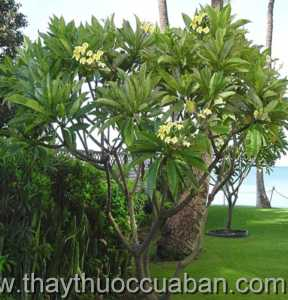

Tên khác
Tên thường gọi: Còn gọi là miến chi tử, kê đản tử, cây hoa đại, bông sứ, hoa sứ trắng, bông sứ đỏ, bông sứ ma, hoa săm pa
Tên khoa học: Plumeria rubra L. var. acutifolia (Poir.) Bailey
Họ khoa học: Thuộc họ Trúc đào
Cây đại
(Mô tả, hình ảnh cây đại, phân bố, thu hái, thành phần hóa học, tác dụng dược lý)
Mô tả:

Phân bố:
Cây rất hay được trồng làm cảnh quanh chùa đền và các công viên vì dáng đẹp, hoa thơm , một số bộ phận dùng làm thuốc.
Vỏ thân đẽo về sao vàng mà dùng, có khi phơi khô để dành. Vỏ rễ cũng dùng như vỏ thân. Hoa đại hái về, phơi khô, ngoài ra còn dùng nụ và lá tươi.
Thu hái:
Ðược nhập trồng vì hoa đẹp, mọc lâu năm. Người ta thu hái hoa khi mới nở, dùng tươi hay phơi hoặc sấy nhẹ đến khô. Dùng khô tốt hơn dùng tươi.
Bộ phận dùng:
Vỏ thân, hoa (Cortex et Flos Plumeriae), lá tươi, nhựa tươi.
Thành phần hoá học:
Các chất thuộc nhóm Iridoid, alcaloid, trong hoa có tinh dầu.
Trong vỏ thân, Peckolt và Geuther đã tìm thấy một glucozit gọi là agoniađin C10H14O6 có tinh thể hình kim mềm, chảy ở 155°C, ít tan trong nước, trong rượu, trong sunfua cacbon, ête và benáa, tan trong axit nitric và sunfuric. Dung dịch màu vàng tươi, nhưng dần dần ngả màu xanh lục. Dưới tác dụng của axit loãng và đun sôi, agoniađin sẽ cho glucoza và một phần chưa xác định được.
Oudman còn chiết được từ nhựa cây một axit gọi là axit plumeric C10H10O5, có tinh thể hình kim nhỏ, tan trong nước sôi, rượu và ête, chảy và bị phân tích ở 130°C. Năm 1952, Grumbach A., Schmiđ H. và Bencze w. (1952, Uberein Pfianzliches Antibioticum. Experimentia, Suisse, 8, (6): 224-225) đã chiết được từ cây hoa đại một chất kháng sinh mới đặt tên là funvoplumierin có tác dụng ức chế sự lớn lên của một số giống Mycobacterium tuberculosis.
G. H. Mahran (1974, Planta Medica, 5: 226) đã lấy từ rễ, lá và vỏ đại một chất đắng gọi là plumierit, một glucozit. Không có trong hoa. Plumierit là một chất bột trắng, có tinh thể, không mùi, vị đắng, độ chảy 155-156°C tan trong nước, trong cồn etylic, metylic, etylaxetat. ít tan trong ête, clorofoc, không tan trong ête dầu hoả. Trong hoa có một ít tinh dầu mùi thơm mát.
Tác dụng dược lý
Tác dụng kháng sinh của chất funvoplumierin đã giới thiệu ở trên.
Năm 1962, khoa dược lý trường Sĩ quan quân y Việt Nam có nghiên cứu tác dụng của hoa đại (dạng nước sắc 10-20%, 100%) đã đi đến một số kết luận sau đây:
Hoa đại có tác dụng hạ huyết áp (thí nghiệm trên thỏ, chó). Hoa khô có tác dụng mạnh hơn hoa tươi.
Hoa đại không làm giãn mạch, không có tác dụng đối với ngoại biên mà là tác dụng trung tâm, và cũng không phải do tác dụng trên hệ phó giao cảm.
Tác dụng hạ huyết áp xuất hiện nhanh và tương đối bền vững. So với tác dụng của ba gạc (Rauvoifia verticiliata) thì ba gạc tác dụng chậm hơn hoa đại. Độ độc của hoa đại cũng ít hơn Rauvolfia verticil lata. Qua thí nghiệm liều dùng cho người có thể tới 60g một ngày, chia làm 2 lần uống.
Vị thuốc kê đản tử -cây đại
(Công dụng, liều dùng, tính vị, quy kinh...)
Công năng:
Hoa có tác dụng tiêu đờm, trừ ho, thanh nhiệt, trừ thấp, lương huyết.
Nhựa mủ có tác dụng tiêu viêm, sát trùng.
Công dụng:
Vỏ thân cạo bỏ lớp bần, thái mỏng, sao thơm, sắc uống để nhuận tràng, xổ ra giun và trị thủy thũng.
Hoa trị sốt, chữa ho, tiêu đờm. Lá giã nấu thành cao, đắp vào chỗ sầy da, chảy máu.
Nhựa: Bôi trị các vết ghẻ lở, viêm tấy.
Cách dùng, liều lượng:
Vỏ dùng để nhuận tràng 3-6g, để xổ 8-16g; Hoa: 12-20g.
Ứng dụng lâm sàng của vị thuốc kê đản tử - cây đại
Chữa táo bón - giúp nhuận tràng
Lấy 4-5 g vỏ thái mỏng, sao thơm, sắc với 200 ml nước, chia làm 3 lần uống trong ngày.
Hoặc: Vỏ đại 50 g, cám gạo 50 g, sao vàng, tán nhỏ rồi rây thành bột mịn, trộn với hồ làm viên 0,5 g. Người lớn dùng 15 viên mỗi ngày, trẻ em 5-9 tuổi uống 5 viên, 10-15 tuổi uống 10 viên. Chia thuốc uống làm 2 lần với nước đun sôi để nguội (không dùng nước chè).
Chữa chân răng sưng đau:
Lấy 12-20 g vỏ rễ ngâm trong 200 ml rượu 25-35 độ trong khoảng 30 phút. Mỗi ngày ngậm 2 lần, không được nuốt. Chú { không được dùng quá liều.
Chữa viêm tấy, lở loét chai chân:
Dùng nhựa cây đại bôi tại chỗ.
Chữa sai khớp, bong gân, mụn nhọt:
Lấy lá đại giã nát đắp tại chỗ.
An thần, giảm huyết áp:
Hoa đại khô thái nhỏ 100 g, hoa cúc vàng khô thái nhỏ 50 g, hoa hòe (sao vàng) 50 g, hạt quyết minh (sao đen) 50 g. Tất cả tán thành bột, chia thành gói 10 g. Mỗi ngày dùng 1-2 gói, hãm uống thay nước chè trong ngày. Thuốc có tác dụng bảo vệ mao mạch, làm giảm nhẹ huyết áp, an thần, gây ngủ nhẹ.
Tham khảo
Chú ý khi dùng
Người đang bị tiêu chảy, có thai không được dùng.
Nơi mua bán vị thuốc Cây đại đạt chất lượng ở đâu?
Trước thực trạng thuốc đông dược kém chất lượng, nguồn gốc không rõ ràng,... xuất hiện tràn lan trên thị trường, làm ảnh hưởng tới hiệu quả điều trị cũng như ảnh hưởng tới sức khỏe của bệnh nhân. Việc lựa chọn những địa chỉ uy tín để mua thuốc đông dược là rất quan trọng và cần thiết. Vậy khách hàng có thể mua vị thuốc Cây đại ở đâu?
Cây đại là vị thuốc nam quý, được sử dụng rộng rãi trong YHCT. Hiện tại hầu hết các cửa hàng thuốc đông dược, phòng khám đông y, phòng chẩn trị YHCT... đều có bán vị thuốc này. Tuy nhiên người mua nên chọn những địa chỉ có uy tín, đảm bảo chất lượng, có giấy phép hoạt động để mua được vị thuốc đạt chất lượng.
Với mong muốn bệnh nhân được sử dụng những loại dược liệu đúng, chất lượng tốt, phòng khám Đông y Nguyễn Hữu Toàn không chỉ là đia chỉ khám chữa bệnh tin cậy, uy tín chất lượng mà còn cung cấp cho khách hàng những vị thuốc đông y (thuốc nam, thuốc bắc) đúng, chuẩn, đạt chuẩn chất lượng. Các vị thuốc có trong tiêu chuẩn Dược điển Việt Nam đều được nghành y tế kiểm nghiệm đạt chất lượng tiêu chuẩn.
Vị thuốc Cây đại được bán tại Phòng khám là thuốc đã được bào chế theo Tiêu chuẩn NHT.
Giá bán vị thuốc Cây đại tại Phòng khám Đông y Nguyễn Hữu Toàn: Gọi 18006834 để biết chi tiết
Tùy theo thời điểm giá bán có thể thay đổi.
+ Khách hàng có thể mua trực tiếp tại địa chỉ phòng khám: Cơ sở 1: Số 481 lô 22 Lê Hồng Phong, Phường Gia Viên, Thành phố Hải Phòng
+ Mua trực tuyến: Thuốc được chuyển qua đường bưu điện. Khi nhận được thuốc khách hàng thanh toán tiền COD.
Tag: cay cay dai , vi thuoc cay dai , cong dung cay dai , Hinh anh cay cay dai , Tac dung cay dai , Thuoc nam
Thaythuoccuaban.com Tổng hợp
*************************